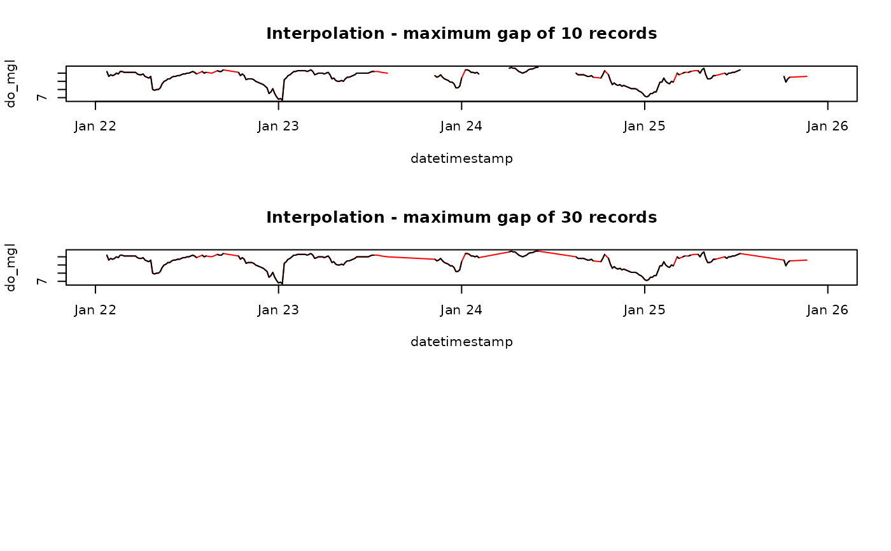

Linearly interpolate gaps in swmpr data within a maximum size
# S3 method for swmpr
na.approx(object, params = NULL, maxgap, ...)input swmpr object
is chr string of swmpr parameters to smooth, default all
numeric vector indicating maximum gap size to interpolate where size is numer of records, must be explicit
additional arguments passed to other methods
Returns a swmpr object. QAQC columns are removed if included with input object.
A common approach for handling missing data in time series analysis is linear interpolation. A simple curve fitting method is used to create a continuous set of records between observations separated by missing data. A required argument for the function is maxgap which defines the maximum gap size for interpolation. The ability of the interpolated data to approximate actual, unobserved trends is a function of the gap size. Interpolation between larger gaps are less likely to resemble patterns of an actual parameter, whereas interpolation between smaller gaps may be more likely to resemble actual patterns. An appropriate gap size limit depends on the unique characteristics of specific datasets or parameters.
data(apadbwq)
dat <- qaqc(apadbwq)
dat <- subset(dat, select = 'do_mgl',
subset = c('2013-01-22 00:00', '2013-01-26 00:00'))
# interpolate, maxgap of 10 records
fill1 <- na.approx(dat, params = 'do_mgl', maxgap = 10)
# interpolate maxgap of 30 records
fill2 <- na.approx(dat, params = 'do_mgl', maxgap = 30)
# plot for comparison
par(mfrow = c(3, 1))
plot(fill1, col = 'red', main = 'Interpolation - maximum gap of 10 records')
lines(dat)
plot(fill2, col = 'red', main = 'Interpolation - maximum gap of 30 records')
lines(dat)
